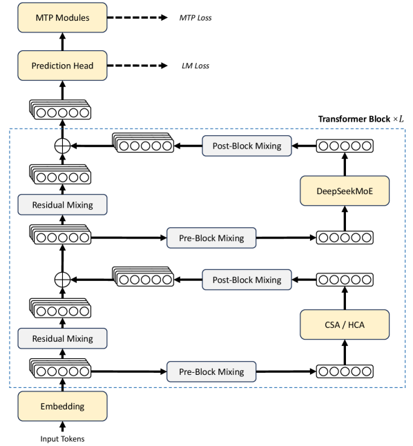
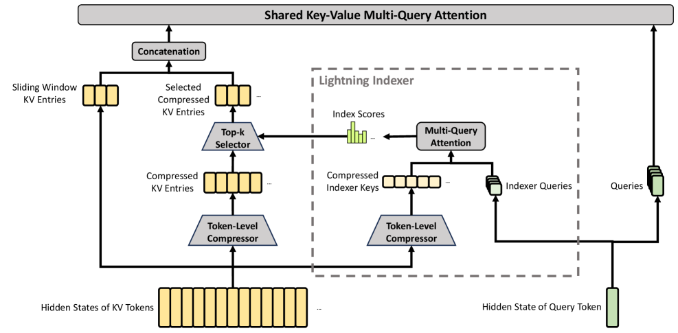
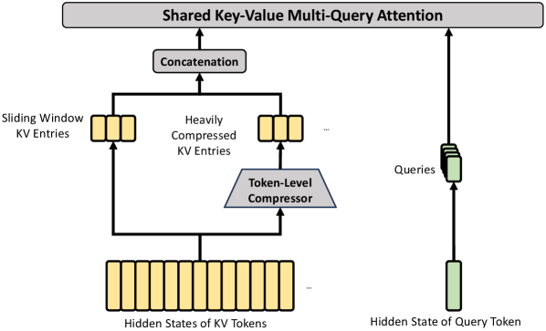
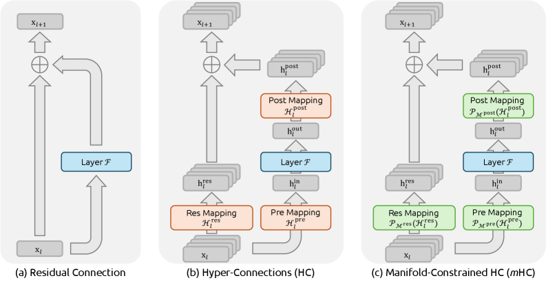
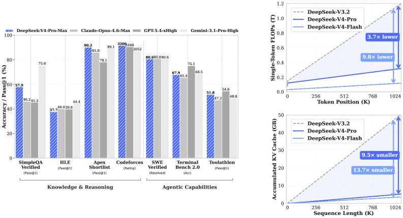
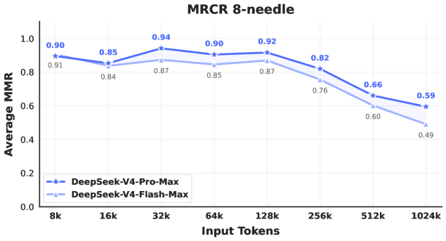

DeepSeek-V4：让百万 token 上下文真正用得起 Towards Highly Efficient Million-Token Context Intelligence
TL;DR · 一句话抓住核心
当上下文拉长到百万 token，瓶颈不在「模型够不够聪明」，而在「注意力的算力和 KV 显存会爆炸」。DeepSeek-V4 的核心思路是：用一套混合注意力把长序列的 KV 缓存先「压缩」再「稀疏选取」，让推理代价几乎与序列长度脱钩。
具体由三件事拼成：① 混合注意力（CSA + HCA）大幅压缩 KV 缓存与算力；② mHC（流形约束超连接）替换残差连接、稳住超深网络的训练；③ Muon 优化器加速收敛。结果：在 1M 上下文下，V4-Pro 只需 V3.2 的 27% 算力 与 10% KV 缓存，把「常态化百万上下文」变成现实。
（所有官方服务默认）
（V4-Pro vs V3.2）
（V4-Pro vs V3.2）
（Flash 32T / Pro 33T）
01 为什么「百万 token」这么难
不是做不到长上下文，而是「做得起」的长上下文太贵。要先看清楚钱花在哪。
推理模型（reasoning models）开启了「测试时扩展」（test-time scaling）的新范式——让模型多想几步就能更准。但这条路被一个底层结构卡住了：标准注意力的计算量随序列长度呈平方增长。一旦上下文进入「超长」区间，无论是复杂的 agent 工作流，还是跨文档的大规模分析，注意力都会成为压倒性的瓶颈。
具体来说，长上下文推理有两笔账始终在涨，而且都随序列长度线性甚至更快增长：
- 单 token 推理 FLOPs：每生成一个新 token，都要和前面所有 token 做注意力，序列越长越慢。
- KV 缓存（KV cache）显存：每个历史 token 的 Key/Value 都要存下来，百万 token 的 KV 缓存能把显存吃干。
DeepSeek-V4 的目标非常聚焦：在不牺牲能力的前提下，把这两笔账同时砍到原来的零头，从而让百万 token 上下文不再是「能跑但跑不起」的演示，而是可以作为默认配置常态化提供的服务。这也为后续的测试时扩展、长程任务、乃至在线学习等新范式打下基础。
02 整体架构：在 V3 骨架上的三处升级
V4 没有推倒重来。它保留了 DeepSeekMoE 与多 token 预测（MTP），把改动精准地落在三个位置。
整体上，DeepSeek-V4 仍是 Transformer + MTP 的结构，相对 V3 的关键升级有三处：① 用 mHC 强化残差连接；② 用 CSA / HCA 混合注意力提升长上下文效率；③ 用 Muon 作为优化器。MoE 部分仍沿用 DeepSeekMoE（仅有微调），MTP 配置与 V3 完全一致。

DeepSeek-V4 的整体架构：注意力层用 CSA / HCA，前馈层用 DeepSeekMoE，残差连接被 mHC 取代。
- 自下而上的主干：Input Tokens → Embedding → 多个 Transformer Block（×L）→ Prediction Head（出 LM Loss）→ MTP Modules（出 MTP Loss）。这是标准的解码器主干。
- 每个 Transformer Block 的两条支路：右侧是计算模块——下半层是 CSA / HCA 注意力，上半层是 DeepSeekMoE 前馈；左侧是被 mHC 改造的残差通路。
- mHC 的三种「混合」盒子：图中反复出现的 Pre-Block Mixing（进入子层前混合残差流）、Post-Block Mixing（子层输出后混合）、Residual Mixing（残差流自身的混合）。它们取代了原来一根简单的「+」残差线。
- 堆叠的小方块：每处残差不再是一条向量，而是被扩展成 n_hc=4 条并行的残差流（图中并排的小格子），mHC 负责约束这几条流之间如何相加，避免深层堆叠时信号爆炸/消失。
- 数据流关系：注意力子层与 MoE 子层各自前后都包了一组 Pre/Post Mixing，再汇入 Residual Mixing，最终向上传到下一层。
一句话总结：右边管「算什么」（稀疏/压缩注意力 + MoE），左边管「怎么把结果稳稳地加回主干」（mHC）。
两个尺寸：V4-Pro 与 V4-Flash
同一套架构、两个规格。Pro 追求能力上限，Flash 追求性价比与速度。两者的关键超参数如下（均来自原文预训练设置）：
| 维度 | DeepSeek-V4-Flash | DeepSeek-V4-Pro |
|---|---|---|
| 总参数 / 激活参数 | 284B / 13B | 1.6T / 49B |
| 预训练 tokens | 32T | 33T |
| Transformer 层数 | 43 | 61 |
| 隐藏维度 d | 4096 | 7168 |
| 路由专家（+共享） | 256 + 1 | 384 + 1 |
| 每 token 激活专家 | 6 | 6 |
| 注意力 query heads | 64 | 128 |
| CSA 稀疏 top-k | 512 | 1024 |
| 前两层注意力 | 纯滑动窗口（SWA） | HCA |
| 上下文长度 | 1M | 1M |
两者共享的配置：CSA 压缩率 m=4、HCA 压缩率 m′=128、滑动窗口 n_win=128、MTP 深度 1、mHC 扩展因子 n_hc=4、Sinkhorn 迭代 20 次。前 3 个 MoE 层使用 Hash routing。
03 重头戏：混合注意力 CSA + HCA
这是省钱的核心引擎。两种压缩注意力层交替使用——一种「压缩 + 稀疏」，一种「极致压缩 + 稠密」。
当上下文到极长尺度，注意力是绝对主导的计算瓶颈。V4 设计了两种高效注意力，并把它们交替（interleaved）排布：
- CSA（Compressed Sparse Attention，压缩稀疏注意力）：先把每 m 个 token 的 KV 压成 1 条，再用 DSA（DeepSeek 稀疏注意力）只挑 top-k 条压缩 KV 做注意力。既压缩又稀疏。
- HCA（Heavily Compressed Attention，重压缩注意力）：用更激进的压缩率 m′ ≫ m 把 KV 压成极少的条数，但保持稠密注意力（不做 top-k 选择），作为「粗粒度的全局记忆」。
一个负责「精挑细选的局部+全局检索」，一个负责「廉价的全局兜底」，交替堆叠后整体长上下文成本被大幅压低。
CSA：压缩 → 索引打分 → top-k 选取 → 共享 KV 注意力

CSA 的核心结构：先把 KV 压到原来的 1/m，再用 DeepSeek 稀疏注意力进一步加速，并叠加一小段滑动窗口 KV 补足局部细节。
- 底部输入（黄色）：左侧是「KV token 的隐状态」，右侧是「当前 query token 的隐状态」（绿色）。
- Token-Level Compressor（蓝色梯形）：把每 m 个 token 的 KV 压成一条 Compressed KV Entries。这一步直接把序列长度缩到 1/m（论文 m=4）。
- Lightning Indexer（虚线框）：另起一条轻量支路，用同样的压缩得到「压缩索引键」，再由 query 经低秩投影得到 Indexer Queries，做一次多查询注意力，算出每个压缩块的 Index Scores（索引分数）。
- Top-k Selector：根据索引分数，只保留得分最高的 k 个压缩 KV 块（Pro k=1024，Flash k=512），这就是 DSA 的「细粒度 token 选择」。
- Sliding Window KV Entries（左上）：额外保留最近 n_win=128 个未压缩 token 的 KV，弥补「同一压缩块内部、以及最近 token」的局部依赖。
- Concatenation → Shared KV MQA：把「选中的压缩 KV」与「滑动窗口 KV」拼接，送入共享 KV 的多查询注意力（MQA，每条压缩条同时当 key 与 value）。
一句话总结：压缩负责「把候选变少」，Lightning Indexer + top-k 负责「只在最相关的少数块上花算力」，滑动窗口负责「别丢掉眼前的细节」。
HCA：把全局记忆压到极致，但保持稠密

HCA 的核心结构：用远大于 CSA 的压缩率（m′=128）把 KV 压成极少条数，不做稀疏选择，直接稠密注意力。
- 更激进的压缩：同样用 Token-Level Compressor，但压缩率 m′=128（CSA 是 4）。100 万 token 经 HCA 后只剩约 7800 条压缩 KV——足够小到可以直接做稠密注意力。
- 没有 Lightning Indexer / top-k：与 CSA 最大的区别——HCA 不做稀疏选择，所有压缩块都参与注意力。因为它的定位是「粗粒度的全局记忆」，边界精度不是重点。
- 单条 KV 流：CSA 用了两条带重叠窗口的 KV 流来保边界精度，HCA 只用一条、且不重叠压缩，更省。
- 同样叠加滑动窗口：左侧仍保留少量未压缩的 Sliding Window KV Entries，补足局部细节。
- 共享 KV MQA：与 CSA 一致，query 经低秩投影后与压缩 KV 做多查询注意力，最后经分组输出投影回 d 维。
一句话总结：CSA 是「精打细算的检索器」，HCA 是「极度廉价的全局背景」，两者交替让模型既看得清近处、又记得住全局。
CSA
- 压缩率 m=4（温和）
- 有 Lightning Indexer + top-k 选取
- 两条重叠 KV 流，保边界精度
- 负责精细的局部 + 全局检索
HCA
- 压缩率 m′=128（激进）
- 无稀疏选择，全部压缩块参与
- 单条 KV 流，不重叠
- 负责粗粒度的全局记忆兜底
要解决什么：稠密注意力要对所有历史 token 计算，长序列下不可承受。DSA 的想法是——大多数 token 对当前 query 其实不重要，只要找出最相关的一小撮即可。
怎么做：DSA 引入一个轻量的「Lightning Indexer」给每个候选（在 V4 中是压缩块）打一个相关性分数，再用「top-k 选择器」挑出得分最高的 k 个，只在这 k 个上做完整注意力。打分用低秩投影 + ReLU，开销远小于完整注意力。
在 V4 中的角色：CSA = 「先压缩」+「DSA 稀疏选取」。V4 相对 V3.2 还选了更小的 top-k，让中短文本也更高效；并对 indexer 的 QK 路径用 FP4 精度进一步加速。这是 V4 长上下文效率的直接来源之一。
展开：CSA / HCA 还叠加了哪些小技巧（4 条）
- Query / KV 归一化：核心注意力前对每个 query head 与压缩 KV 额外做一次 RMSNorm，避免注意力 logits 爆炸，提升训练稳定性（也因此 Muon 里不需要 QK-Clip）。
- 部分 RoPE：只对 query / KV 向量的最后 64 维施加旋转位置编码；并对核心注意力输出按位置 −i 再施加一次 RoPE，使输出携带相对位置信息。
- 滑动窗口分支：为严格保持因果性，query 只能看「之前的压缩块」，看不到本块内其它 token；滑动窗口（n_win=128 未压缩 KV）补回最近 token 的局部依赖。
- Attention Sink：为每个 head 设一个可学习的 sink logit 加到注意力分母上，允许某个 head 的总注意力权重不为 1、甚至接近 0。
04 mHC：让超深网络稳得住的残差连接
注意力解决了「算得起」，mHC 解决了「训得稳」。它给「超连接」加上一道数学护栏。
普通残差连接是一条简单的「+」。超连接（Hyper-Connections, HC）把残差流的宽度扩展为 n_hc 倍（V4 取 4），让多条残差流之间可以学习如何混合，从而多出一条与隐藏维度解耦的扩展轴。但 HC 在堆叠很多层时，训练常出现数值不稳定，限制了它的规模化。
mHC（Manifold-Constrained Hyper-Connections，流形约束超连接）的核心创新：把残差混合矩阵 B_l 约束到一个特定流形——双随机矩阵（doubly stochastic matrices）构成的 Birkhoff 多胞形上。

从左到右：(a) 普通残差连接、(b) 超连接 HC、(c) 流形约束超连接 mHC。mHC 在 HC 的三个映射上加了流形投影（绿色）。
- (a) 普通残差：一条向量 x_l 进入 Layer ℱ，输出与输入直接相加得到 x_{l+1}。简单但表达力有限。
- (b) HC：把残差流扩成多条（堆叠的小方块），引入三个映射——Pre Mapping（决定输入子层的内容）、Res Mapping（残差流自身如何相互混合，即矩阵 B_l）、Post Mapping（子层输出如何写回各条残差流）。橙色表示这些映射是「无约束」的，容易失稳。
- (c) mHC：在三个映射外套上流形投影 P_M(·)（绿色）。其中 Res Mapping 被投影到双随机矩阵流形，Pre/Post 映射用 Sigmoid 约束为非负且有界。
- 为什么有效：双随机矩阵的谱范数 ‖B_l‖₂ ≤ 1，意味着残差变换是「非扩张的」（不会放大信号）；而且这类矩阵在相乘下封闭，深层堆叠时依然稳定。
- 怎么实现约束：对原始矩阵先取指数保证为正，再用 Sinkhorn-Knopp 算法反复做行/列归一化（V4 迭代 20 次），收敛到一个双随机矩阵。
一句话总结：HC 给残差更强的表达力，mHC 给这份表达力套上「不放大信号」的数学护栏，让超深网络既有表现力又训得稳。
这道护栏的代价很低：通过融合内核、重计算、调整 DualPipe 流水线等工程优化，mHC 的额外墙钟开销仅占重叠后 1F1B 流水阶段的 6.7%。原论文报告 mHC 相比 HC 在多数基准上更优、训练损失差距与梯度范数更稳。
05 Muon 优化器：更快收敛、更稳训练
第三块拼图。V4 把大部分参数的优化器从 AdamW 换成 Muon，关键是「正交化」梯度更新。
V4 对绝大多数模块使用 Muon，但保留 AdamW 给：embedding 模块、prediction head、mHC 的静态偏置与门控因子、以及所有 RMSNorm 权重。Muon 的核心是：在把动量更新作用到权重前，先用 Newton-Schulz 迭代把更新矩阵近似正交化（即把 SVD 中的奇异值都拉到 1 附近）。
「混合」Newton-Schulz 是 V4 的小改动：共 10 次迭代分两段——前 8 步用系数 (3.4445, −4.7750, 2.0315) 快速收敛、让奇异值接近 1；后 2 步换成 (2, −1.5, 0.5) 把奇异值精确稳定在 1。
因为 V4 的注意力结构允许直接在 query/KV 上做 RMSNorm 来防止注意力 logits 爆炸，所以 V4 的 Muon 不需要 QK-Clip 技巧。
冲突在哪：传统 ZeRO 为 AdamW 这类「按元素」的优化器设计，可以把一个参数矩阵切到多个 rank 上分别更新。但 Muon 的 Newton-Schulz 需要完整的梯度矩阵才能做正交化，无法简单切分。
怎么解：对稠密参数，限制 ZeRO 并行的最大规模，用背包算法把参数矩阵分配到各 rank、让负载均衡（padding 开销通常 <10%）；对 MoE 参数，每个专家独立优化、按专家展平后均匀分布。此外，形状相同的连续参数会自动合并以批量执行 Newton-Schulz；MoE 梯度同步用 BF16（随机舍入）减半通信量，再用「all-to-all + 本地 FP32 求和」保证数值稳健。
06 三件事合起来：省了多少
混合注意力 + 低精度存储/计算，让 V4 在长上下文下的两笔账都被砍到零头。

左：V4-Pro-Max 与各竞品的基准表现；右：V4 系列与 V3.2 的单 token 推理 FLOPs 和累积 KV 缓存随序列长度的对比。
- 左图（柱状）：在 Knowledge & Reasoning 与 Agentic 两组基准上，对比 V4-Pro-Max 与 Claude-Opus-4.6-Max、GPT-5.4-xHigh、Gemini-3.1-Pro-High。V4-Pro-Max 在 Codeforces（3206）、Apex Shortlist（90.2）、LiveCodeBench 等项领先，在 SimpleQA-Verified 上显著超过其它开源模型但落后 Gemini。
- 右上图（FLOPs）：横轴是 token 位置（到 1024K），纵轴是单 token 推理 FLOPs。V3.2（灰虚线）随长度线性飙升；V4-Pro 仅为其 1/3.7，V4-Flash 仅为 1/9.8。
- 右下图（KV 缓存）：横轴是序列长度，纵轴是累积 KV 缓存（GB）。在 1M 处，V4-Pro 比 V3.2 小约 9.5×，V4-Flash 小约 13.7×。
- 关键含义：曲线斜率越平，意味着「再长的上下文也不会让成本失控」——这正是 V4 想证明的事。
一句话总结：左图说「能力没掉队」，右图说「代价被压平」，合起来才是「百万上下文用得起」。
（1M 上下文 vs V3.2）
（1M 上下文 vs V3.2）
（vs BF16 GQA8 基线 @1M）
（占 1F1B 流水阶段）
效率不只来自结构，还来自低精度：KV 缓存用混合精度存储（RoPE 维度 BF16、其余 FP8），相比纯 BF16 几乎减半；Lightning Indexer 的注意力用 FP4 计算；路由专家权重用 FP4。这些叠加起来，才把上图的曲线压平。
推理侧：为异构 KV 缓存定制布局
混合注意力带来一个新麻烦——不同层的 KV 缓存大小和更新规则都不一样（CSA、HCA、滑动窗口各不相同），传统 PagedAttention 的假设被打破。V4 为此设计了专门的 KV 缓存布局。

V4 的 KV 缓存布局：分成「经典 KV 缓存」（存 CSA/HCA 压缩条）与「状态缓存」（存 SWA 和尚未够压缩的尾部 token）两部分。
- State Cache（左，状态缓存）：每个请求分一个固定大小的块。其中 SWA 段存最近 n_win 个 token 的 KV，CSA/HCA 段存「还没攒够一个压缩块」的未压缩尾部 token。这部分被当作「依赖当前位置的序列状态」管理。
- KV Cache（右，经典缓存）：每个请求分多个块，每块覆盖 lcm(m, m′) 个原始 token，产出 k₁ 条 CSA 压缩 token 与 k₂ 条 HCA 压缩 token。图中按层（Layer-2/3/4/5…）区分了 CSA Indexer KV、CSA Main KV、HCA KV。
- 为什么这么分：SWA 有独立的命中与驱逐策略，且不压缩、体积大（约为压缩 KV 的 8 倍），需要单独管理；压缩 KV 则规整、可对齐缓存行，便于高性能稀疏注意力内核访问。
- 配套能力：基于这套布局，V4 还做了磁盘 KV 缓存，对共享前缀请求复用已压缩的 KV，避免重复 prefill。
一句话总结：把「规整可复用的压缩 KV」和「易变的滑动窗口/尾部状态」分开管理，才能让混合注意力在工程上跑得动、还能跨请求复用前缀。
07 训练：两个稳定性 trick 与一条后训练新路线
万亿参数 MoE 的训练极易失稳；后训练则用「专家蒸馏」代替了混合 RL。
预训练：长度逐步扩展 + 稀疏后引入
训练序列长度从 4K 逐步扩到 16K、64K、最终 1M。注意力先稠密、后稀疏：前期用稠密注意力 warmup（V4-Pro 的稠密阶段更长），到 64K 长度时引入稀疏注意力，并先单独 warmup CSA 的 Lightning Indexer，再切到稀疏注意力训练大部分时间。
Anticipatory Routing（预判路由）
loss 尖峰总与 MoE 层的 outlier 相关，而路由机制会放大 outlier。做法：第 t 步用当前参数 θ_t 算特征，但路由索引用历史参数 θ_{t−Δt} 计算并提前缓存。仅在检测到 loss 尖峰时触发，额外开销可忽略。
SwiGLU Clamping（钳制）
把 SwiGLU 的线性分量钳制到 [−10, 10]，并把 gate 分量上界也设为 10。经验上能有效消除 outlier、稳住训练，且不损失性能。
后训练：专家培养 → On-Policy 蒸馏合并
V4 的后训练采用「两阶段」范式，关键改动是把 V3.2 的混合 RL 阶段整体替换为 On-Policy Distillation（OPD，在线策略蒸馏）：
OPD 用全词表 logit 蒸馏（而非简化的 token 级 KL 估计），梯度更稳、蒸馏更忠实。为让「教师可达万亿参数、数量近乎无限」可行，框架把教师权重集中存储、按需加载，并只缓存最后一层隐状态、训练时即时重建 logits，规避显存爆炸。
展开：后训练里其它值得一提的设计（GRM / 工具调用 / 三档推理）
- 生成式奖励模型（GRM）：对难验证的任务，不再训练单独的标量奖励模型，而是让 actor 本身兼任「裁判」，直接对 GRM 做 RL，把模型的推理能力融入评分。
- 新工具调用 schema：用特殊 token |DSML| + XML 格式描述工具调用，相比旧格式显著减少转义失败和调用错误。
- 三档推理努力：Non-think（快）/ Think High（显式推理）/ Think Max（极致推理，附专门 system prompt）。Max 模式用更长上下文和更小长度惩罚训练，在最难的任务上优于 High。
- 交错思考（Interleaved Thinking）：借助 1M 上下文，在工具调用场景下完整保留跨轮次的推理链，避免每个新用户回合都把思考清空重来。
- FP4 QAT：后训练引入量化感知训练，对 MoE 专家权重与 indexer 的 QK 路径用 FP4，top-k 选择器 2× 加速且保持 99.7% 召回。
08 实验：能力到了哪一档
一句话：V4-Pro-Max 重定义了开源模型的上限，但离最前沿闭源仍有约 3–6 个月差距。
原论文用 V4-Pro-Max（V4-Pro 的最大推理努力模式）对标主流闭源/开源模型。下面只摘取最能说明问题的几项（完整数据见原文 Table 6/7）：
| 基准（指标） | Opus-4.6 | GPT-5.4 | Gemini-3.1-Pro | DS-V4-Pro-Max |
|---|---|---|---|---|
| SimpleQA-Verified（知识） | 46.2 | 45.3 | 75.6 | 57.9 |
| LiveCodeBench（代码） | 88.8 | — | 91.7 | 93.5 |
| Codeforces（Rating） | — | 3168 | 3052 | 3206 |
| Apex Shortlist（数学） | 85.9 | 78.1 | 89.1 | 90.2 |
| HLE（难题） | 40.0 | 39.8 | 44.4 | 37.7 |
| MRCR 1M（长上下文检索） | 92.9 | — | 76.3 | 83.5 |
| CorpusQA 1M（长上下文） | 71.7 | — | 53.8 | 62.0 |
加粗为 V4-Pro-Max 在该行中领先或具竞争力的项。完整对比含 K2.6、GLM-5.1 等开源模型，详见原文。
亮点
- 知识：SimpleQA-Verified 显著超所有开源模型（约 +20 个点），刷新开源 SOTA。
- 代码竞赛：Codeforces 3206，在人类选手中约排第 23；首次有开源模型在该项与闭源持平。
- 形式化数学：Putnam-2025 达成 120/120 满分证明。
- 长上下文：MRCR/CorpusQA 1M 上超过 Gemini-3.1-Pro。
差距与局限
- 整体推理：略逊于 GPT-5.4 / Gemini-3.1-Pro，约落后前沿 3–6 个月。
- 架构复杂：为降风险保留了大量已验证组件，结构偏复杂，未来要做精简。
- 稳定性原理：Anticipatory Routing 与 SwiGLU Clamping 有效但机理未明。
- 指令遵循 / 排版：复杂指令遵循略逊 Opus，长文摘要与 PPT 美观度仍待提升。
长上下文检索：1M 仍然稳

V4 系列在 MRCR（8-needle）多针检索任务上的表现：随输入长度从 8K 到 1024K 的检索准确率变化。
- 横轴：输入长度，从 8K 一路到 1024K（1M）；纵轴：平均 MMR（检索匹配质量）。
- 两条线：深色为 V4-Pro-Max，浅色为 V4-Flash-Max。Pro 全程高于 Flash。
- 关键观察：在 128K 以内，检索性能非常稳定（Pro 约 0.90+）；超过 128K 后开始下降，但到 1M 时仍保持相当强度（Pro 0.59、Flash 0.49）。
- 含义：这说明 V4 的「压缩 + 稀疏」并没有让长程检索能力崩塌——百万 token 不只是「能塞进去」，而是「还能找得到」。论文称在 1M 检索上仍强于多数同行。
一句话总结：百万上下文的价值在于「长且可用」，这张图就是「可用」的直接证据。
09 结论与未来方向
DeepSeek-V4 的故事很纯粹：通过混合注意力（CSA + HCA）+ mHC + Muon 的组合，把超长上下文的效率瓶颈打穿，让百万 token 上下文成为可以默认提供的常态能力，为测试时扩展、长程 agent 任务、乃至在线学习等新范式铺路。V4-Pro-Max 重定义了开源模型的能力上限，V4-Flash 则在性价比上提供了高度可用的替代。
作者列出的未来方向包括：精简架构（当前为降风险而偏复杂）、理解训练稳定性的底层原理、探索新维度的稀疏（如更稀疏的 embedding 模块）、低延迟架构与系统、长程多轮 agent，以及多模态能力。